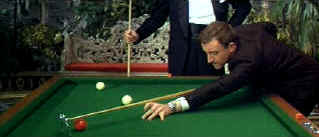

| A
Shot in the Dark/A-,B |
| MGM/1964/102/ANA 2.35/ PS 1.33 |
Blake Edwards is one of modern film's great farceurs. The rhythms and site
gags of A Shot in the Dark never fail to break me up. I know every moment by heart. But it doesn't
matter. Familiarity breeds laughter in this case.
The Pink Panther initiated one of the most
successful comic film series. The follow-up, A Shot in the Dark is the
only one that doesn't use the panther in the title. Inspector Clouseau takes
center stage in this sequel. The daffy French policeman who boggles words and
minds with equal equanimity. The bane of Commissioner's Dreyfus's existence, Clouseau manages to solve his cases through a thorough misunderstanding of
everything.
When Clouseau is called upon to investigate a murder in the
household of a wealthy man, everyone is suspect. The Inspector grills everyone
with perfect ineptitude and instinctively knows that chief suspect, Maria
Gambrelli must be innocent by virtue of her beauty alone. Clouseau stops short
of salivating over her. The mansion setting with its beautiful front
fountain provides some outstanding Edwards opportunities for comic explosion, Clouseau shows a special affinity for pool, and several wonderful characters
are introduced to aid and abet Clouseau's insanity.
 |
| Not quit "Fast Eddie". ©MGM |
Peter Sellers proves himself a comic
genius as Clouseau. Body language and mangled speech patterns provide are
delivered by Sellers with the nimbleness of a prima ballerina. Herbert Lom
distinguishes himself with his frenetically nervous portrayal of Inspector
Dreyfus. Lom's tics are perfectly practiced in response to the accidental
assaults of Clouseau. A Shot in the Dark has two other great supporting
assets. George Saunders struts with marvelous disdain as aristocratic Benjamin
Ballon and Elke Sommer keeps a straight face and curvaceous body even under
the dire circumstances of marching through a nudist colony with Clouseau. Burt
Kwok makes an aggressive appearance as Clouseau manservant Kato and the
wonderfully droll Graham Stark gives police colleague Hercule Lajoy an extra
helping of straight lines.
Writer/director Edwards is in top form leading his
troop of players to non-stop hilarity. The editing is crisp, the visual style
snappy and Henry Mancini's charming Pink Panther theme helps keep a smile on
everyone's face. Hallelujah Edwards!
There is some obvious element deterioration on the source for this
A
Shot in the Dark DVD. Minor scratches and dirt appear on some scenes but never to the extent that
it disturbs the flow of the film. It appears there is also slight loss of color vitality in a few
sequences. Generally, color is fully saturated. Blacks and shadow detail are fine. Image resolution
is excellent. The film looks very nice and nothing interferes with the magnificent
comedy. Dolby Digital 2 channel mono delivers clear dialogue. Some of the comic effects could
have been enhanced by surround encoding.
|
|
|
|


Quite simply one of the funniest comedies ever made and the transfer is gorgeous.

Selections from the Feature Archive include articles on
Akira Kurosawa, Frank
Darabont, Blonde Bimbos, Hollywood Street Gangs, or Vietnam: The
Hollywood Pariah, and many more....
Sturges Emerges
Preston Sturges was Hollywood's resident comic genius for more than a decade. His movies are
timeless. Click on his image to read all about it.

Take a look at the merry images of America's gift to
the movies: Hollywood Musical Posters are featured from The Movie
Poster Archive.


Specializing in DVD reviews, DVD Authority boasts almost 400 reviews in an easy to use, elegant,
interface.

A love of movies drives this small DVD production
company, Synapse Films. Currently
specializing in horror and cult films. Watch for new DVD releases of film festival independents as
Synapse branches out.
 DVD Gold DVD Gold
specializes in Region 2 films, and spins gold about the latest DVD releases in
England and elsewhere. Check out the new site.
 DVD Informix is a British site providing a variety of DVD
information, including lots of DVD software. Check it out from articles to links. DVD Informix is a British site providing a variety of DVD
information, including lots of DVD software. Check it out from articles to links.

ISF Monitor Calibrations in the
Tristate New York area. Lots of hardware info and frequent hardware peaks from video expert Kevin
Miller.They may be judgmental, but that's the point, isn't it. Lots of DVD reviews plus news and
more.
 Jim
Doolittle Jim
Doolittle
ISF Instructor. Premier calibrator and expert front projection system setup technician in the
Boston area.

The judges are back in the court room after a short absence for a face lift.
|